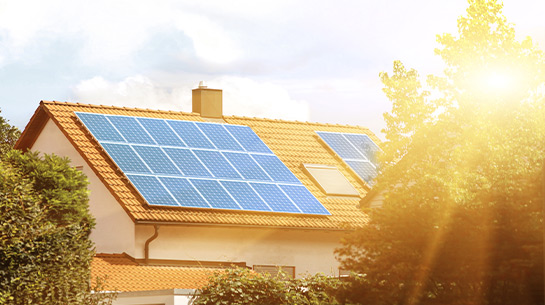
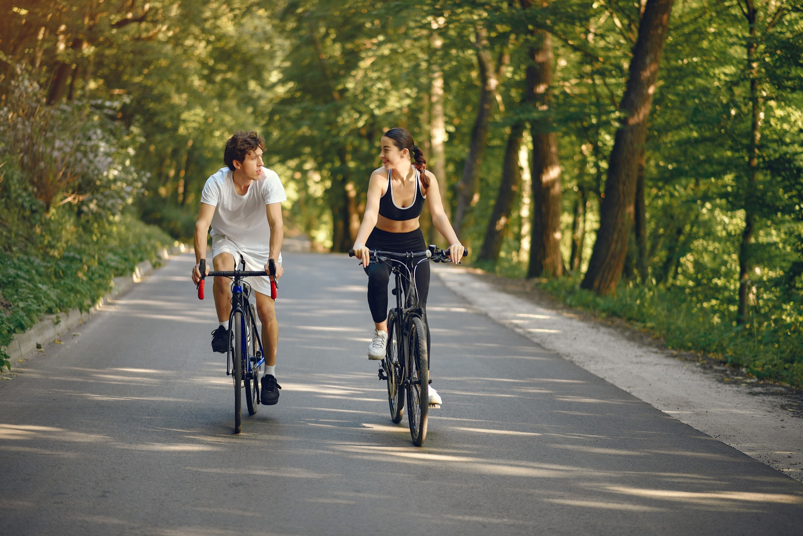

No Consumo Diário
Evitar Desperdício de Alimentos🥗
Planeje as refeições e reaproveite sobras para evitar desperdícios.

Usar Sacolas Reutilizáveis🛍️
Substitua sacolas plásticas por opções reutilizáveis em suas compras.

No Lar
Economizar Energia🔌
Use lâmpadas LED e aproveite ao máximo a luz natural.
Separar e Reciclar Resíduos♻️
Organize o lixo em categorias para facilitar a reciclagem.

Na Mobilidade
Optar por Transportes Sustentáveis🚲
Use bicicletas, transporte público ou ande a pé sempre que possível.
Na Alimentação
Compostagem Doméstica🌱
Transforme restos de alimentos em adubo natural para suas plantas.